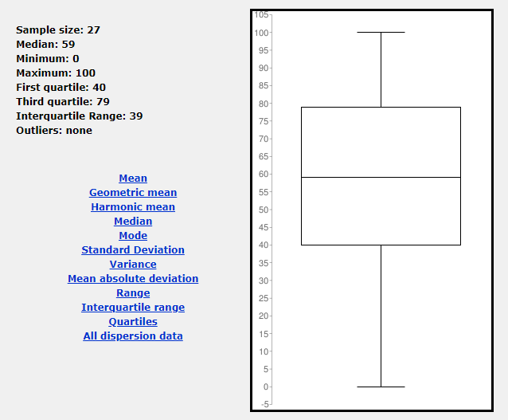

Quantitative Analysis
How often do you play games?
The data above shows how often the participants play games "Always" begin defined as incredibly often usually many times a day, this is where 55.6% of the sample are found with a single person not being a gamer. This has an impact on the data as regular players will have expectations of an interface but also a level of intuition as to how a game should play.
On what system do you play games?
The participants where then asked to identify which system they primarily play on, this yielded some interesting results as over 50% of the sample identified as primarily playing on the PC platform be it desktop or laptop. With only 1 primarily making use of older legacy systems and none for the mobile/tablet or 3DS. This last one is the most interesting as with no primary users of the mobile/tablet section of the market it does not reveal anything for the game on a portable platform, while multiple participants primarily use the Nintendo Switch it does not grant the insight that mobile/tablet gamers would have done.
Have the participants played Sonic The Hedgehog 1991?
It was critical to identify if the players had ever played the game prior to the evaluation. Those who have played prior will have insights to be able to give more than a snapshot answer but will also look at the game incredibly differently to new players due to knowing the game's interface it will be a more trained response rather than the natural one from the 11.1% of participants who had never played the game before.
How well is the aim of the game conveyed?
The aim of Sega's Sonic The Hedgehog is to run through the level from left to right avoiding enemies and obstacles along the way. Like most Japanese platformers from the 1980's and 90's such as Mario and Mega Man. The average result from the sample group was 76/100. According to the sample group this means that Sonic The Hedgehog does a good job of displaying the objective. This is interesting as the games does not tell you what to do directly nor does it have a tutorial level to teach you. This data has a standard deviation of 24.58 as such even within standard deviation it does a passable job of this. This lends to the idea that the simple left to right objective of the game is incredibly intuitive and would likely be a players first assumption. One of the main factors that may encourage this is that by default Sonic looks towards the right, implying that this is the direction to move in. This plays on the way that in the west we read and write from left to right on the page likely making this an ingrained behavior in the sample of western players. None of this can be confirmed with the available data but it is a hypothesis that could be further explored with more data.
How well does the interface convey feedback?
 The feedback provided in Sega's Sonic The Hedgehog is minimal, audio plays on the collection of rings and power ups, as well as when you take damage, defeat an enemy or die. The participants scored this at 56/100 which is barely satisfactory. The standard deviation for this was 26, while with such a small sample this does not mean much it is interesting none the less as even within standard deviation there were not great results for this section of the game. This is likely due to a lack of feedback in the game. Due to the web browser port there is no tactile feedback potential but there was also no tactile feedback in the original release of the game on the Megadrive. Compared to modern games Sonic The Hedgehog shows the age of the game here with little feedback to the player be it audio or visual. While a large amount of the failing of the game can be put on the limitations of the age of the game there are other games from the era that would likely achieve a higher score such as Metroid and Mega Man. It is the view of this study that this is a failing on the side of the developers. It should be noted that there are disparities in the data one scoring the feedback as 7/100 and 2 scoring it 100/100 this leads to question what the result would have been on a truly representative sample and prevents the drawing of any conclusion.
How well is the interface laid out?
The layout of the interface is interesting in Sonic the Hedgehog, whereas most games focus their interface in the top right or along the bottom of the screen, Sonic The Hedgehog focuses the interface along the left hand side. This is an interesting design choice as it is not the standardised location and places the interface on the side the player is no moving towards. It is the view of this study that this is intentional as it encourages the player to move towards the right away from the display. The average result from the sample group was 77 with a standard deviation of 24.59. This means that the interface can be hypothesize to be well laid out but it is not to a standard that could be considered amazing. The interface consists of the score, time, rings and lives. These 4 simple components are displayed along the left with the lives being at the bottom with an icon and the rest being yellow text at the top. This particular component recieved a large number of 100/100 marks but also got a 0/100, this 0 it is the view of this study is an outlier lying not just outside the standard deviation but being an extreme.
How well is score displayed?
The display of the score is tied into the interface above as the score is an aspect of that main interface. As such it is not surprising to find that the participants ranked it very closely to the interface as a whole with 81/100 with a standard deviation of 25.9. From this we can hypothesize that the score display is indeed a success with a simple but effective execution. Looking at modern score based games such as Call of Duty, Black Ops 4 there is little improvement between it and Sonic The Hedgehog 27 years prior. Both make use of a simple count on the side of the screen, placed not to interfere with the gameplay but to be easy to view and keep track of for the player.
How well is the player's status displayed?
In Sonic The Hedgehog the player's status is an interesting aspect of the game interface as it composes of more parts than at first glance. At first glance it appears that the interface for this is your rings and lives but there is one more aspect to this. During the water levels there is a timer that appears as you are running out of air adding another layer onto this that does not appear in the first zone. This aspect of the game scored 70/100 from the participants making it an acceptable interface but not substantially great. While the sample size limits any conclusions that can be made it can be hypothesized that the simplistic layout of this aspect of the interface lends itself to easy use though the lives are separate from the rest of the interface may be a hindrance. It is the view of this study that the simple layout coupled with the invasive nature of the water warnings account for this high score, while there clearly room for improvement it is evident that this is not a failure and is a strong aspect of the interface of Sonic The Hedgehog.
Heuristic Analysis
First Expert
 The first expert has clearly got a positive impression of the game's interface. They highlight that a number of the issues can be attributed to the age of the game. In addition to this they make a number of
points as to the simplicity of the interface. This is viewed by the expert as a positive as it does not interfere with the gameplay and yet provides all the information needed. They also are positive of the
documentation of the game despite its cluttered nature.
The first expert has clearly got a positive impression of the game's interface. They highlight that a number of the issues can be attributed to the age of the game. In addition to this they make a number of
points as to the simplicity of the interface. This is viewed by the expert as a positive as it does not interfere with the gameplay and yet provides all the information needed. They also are positive of the
documentation of the game despite its cluttered nature.